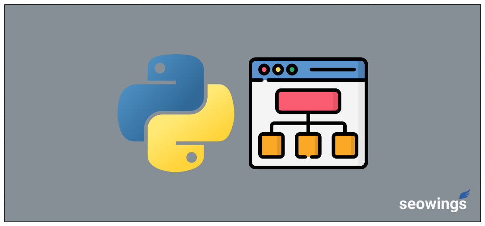

pysitemaps: Python Package for Sitemaps¶
pysitemaps package can be used to (systematically) generate and analyze sitemaps.
Whats in pysitemaps?¶
We believe in monolithic software development and created this tiny package that does its job without any bloat.
How to Use pysitemaps?¶
You can find detailed tutorial on pysitemaps website.
Contribute¶
Pull Requests, Feature Suggestions, and collaborations are welcome.
About Us¶
seowings is an opensource project to write, develop and promote tools for Data Sciences and Digital Marketing.